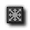
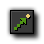
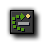

Move Actions
The first set of actions consists of those
related to the movement of instances.
The following actions can all be found on the first tab that you
see when you open an object and has the label "move". These
actions are all related in some way to the movement and position of
an instance within the room.
Move
Move
Fixed
Use this action to start the instance moving in a particular
direction. You can indicate the direction using the buttons with
the arrows on it. Use the middle button to stop the motion. Also
you need to specify the speed of the motion. This speed is given in
pixels per step. Preferably don't use negative speeds. You can
specify multiple directions. In this case a random choice is made.
In this way you can let a monster start moving either left or
right.
Move
Free
This is the second way to specify a motion. Here you can indicate a
precise direction. This is an angle between 0 and 360 degrees. 0
means to the right. The direction is counter-clockwise. So for
example 90 indicates an upward direction. If you want an arbitrary
direction, you can type random(360). As you will see below
the function random gives a random number smaller than the
indicated value. As you might have noticed there is a checkbox
labeled Relative. If you check this, the new motion is added
to the previous one. For example, if the instance is moving upwards
and you add some motion to the left, the new motion will be upwards
to the left.
Move
Towards
This action gives a third way to specify a motion. You indicate a
position and a speed and the instance starts moving with the speed
towards the position. (It won't stop at the position!) For example,
if you want a bullet to fly towards the position of the spaceship
you can use as position spaceship.x, spaceship.y. (You
will learn more about the use of variables like these below.) If
you check the Relative box, you specify the position
relative to the current position of the instance. (The speed is not
taken relatively!)
Speed
Horizontal
The speed of an instance consists of a horizontal part and a
vertical part. With this action you can change the horizontal
speed. A positive horizontal speed means a motion to the right. A
negative one means a motion to the left. The vertical speed will
remain the same. Use relative to increase the horizontal speed (or
decrease it by providing a negative number).
Speed
Vertical
In a similar way, with this action you can change the vertical
speed of the instance.
Set
Gravity
With this action you can create gravity for this particular object.
You specify a direction (angle between 0 and 360 degrees) and a
speed, and in each step this amount of speed in the given direction
is added to the current motion of the object instance. Normally you
need a very small speed increment (like 0.01). Typically you want a
downward direction (270 degrees). If you check the Relative
box you increase the gravity speed. Note that, contrary to real
life, different objects can have different gravity directions.
Reverse
Horizontal
With this action you reverse the horizontal motion of the instance.
This can for example be used when the object collides with a
vertical wall.
Reverse
Vertical
With this action you reverse the vertical motion of the instance.
This can for example be used when the object collides with a
horizontal wall.
Set
Friction
Friction slows down the instances when they move. You specify the
amount of friction. In each step this amount is subtracted from the
speed until the speed becomes 0. Normally you want a very small
number here (like 0.01).
Jump
Jump to
Position
Using this action you can place the instance in a particular
position. You simply specify the x- and y-coordinate, and the
instance is placed with its reference point on that position. If
you check the Relative box, the position is relative to the
current position of the instance. This action is often used to
continuously move an instance. In each step we increment the
position a bit.
Jump to
Start
This action places the instance back at the position where it was
created.
Jump to
Random
This action moves the instance to a random position in the room.
Only positions are chosen where the instance does not intersect any
solid instance. You can specify the snapping used. If you specify
positive values, the coordinates chosen with be integer multiples
of the indicated values. This could for example be used to keep the
instance aligned with the cells in your game (if any). You can
specify a separate horizontal snapping and vertical snapping.
 Align to
Grid
Align to
Grid
With this action you can round the position of the instance to a
grid. You can indicate both the horizontal and vertical snapping
value (that is, the size of the cells of the grid). This can be
very useful to make sure that instances stay on a grid.
Wrap
Screen
With this action you can let an instance wrap around, that is, when
it leaves on one side of the room it reappears at the other side.
This action is normally used in the Outside event. Note that
the instance must have a speed for wrapping to work, cause the
direction of wrapping is based on the direction of the motion. You
can indicate whether to wrap only horizontal, only vertical, or in
both directions.
Move to
Contact
With this action you can move the instance in a given direction
until a contact position with an object is reached. If there
already is a collision at the current position the instance is not
moved. Otherwise, the instance is placed just before a collision
occurs. You can specify the direction but also a maximal distance
to move. For example, when the instance is falling you can move a
maximal distance down until an object is encountered. You can also
indicate whether to consider solid object only or all objects. You
typically put this action in the collision event to make sure that
the instance stops in contact with the other instance involved in
the collision.
Bounce
When you put this action in the collision event with some object,
the instance bounces back from this object in a natural way. If you
set the parameter precise to false, only horizontal and vertical
walls are treated correctly. When you set precise to true also
slanted (and even curved) walls are treated correctly. This is
though slower. Also you can indicate whether to bounce only against
solid objects or against all objects. Please realize that the
bounce is not completely accurate because this depends on many
properties. But in many situations the effect is good enough.
Paths
Set
Path
With this action you can specify that the instance should follow a
particular path. You indicate the path that must be followed and
the speed in pixels per step. When the speed is positive the
instance starts at the beginning of the path. If it is negative it
starts at the end. Next you specify the end behavior, that is, what
should happen when the end of the path is reached. You can choose
to stop the motion, restart from the beginning, restart from the
current position (which is the same when the path is closed), or
reverse the motion. Finally you can indicate that the path must be
seen as absolute, that is, the position will be as indicated in the
path (this is useful when you have designed the path at a
particular place in the room) or relative, in which case the start
point of the path is placed at the current location of the instance
(end point when speed is negative). See the chapter on paths for
more information.
End
Path
Use this action to stop the path for the instance.
Path
Position
With this action you can change the current position of the
instance in the path. This must be a value between 0 and 1
(0=beginning, 1=end).
Path
Speed
With this action you can change the speed of the instance on the
path. A negative speed moves the instance backwards along the path.
Set it to 0 to temporarily stop the motion along the path.
Steps
Step
Towards
With this action you indicate a position and a speed and the
instance starts moving with the speed towards the position. There
is also the possibility of assigning an object for this instance to
check for while moving, and if any instances of the specified
object are encountered along the way, the instance with the action
will stop moving. If you check the Relative box, you specify
that the x and y position is relative to the current position of
the instance (this does not affect the speed).
Step
Avoid
This action is similar to the "Step Towards" action, above.
However, with this the instance will not only move towards the
specified x and y position at a given speed, it will also actively
try to avoid the specified instances that it encounters on
the way. The instances to avoid can be either only the ones flagged
as "solid" or all instances in general, and in this way you can
create a basic type of Ai for your instance. If you check the
Relative box, you specify that the x and y position is
relative to the current position of the instance (this does not
affect the speed).
© Copyright YoYo Games Ltd. 2018 All Rights Reserved